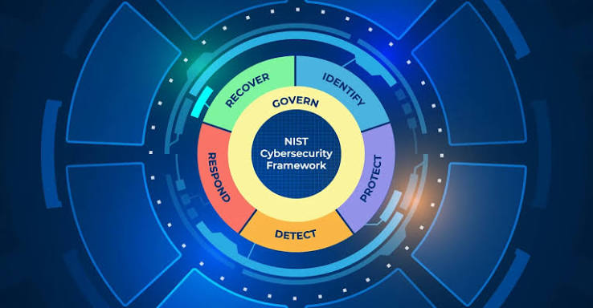

Cybersecurity: Attack, Defend and Secure
Protecting digital assets in the modern world

How digital systems are protected and what role DevOps plays in modern security
1. What is Cybersecurity?
Cybersecurity is the combination of thecnologies, processes, practices, and knowledge used to protect systems, networks, devices, applications, and data against unauthorized access, attacks, damage, or disruption.
Cybersecurity is not only about "stoping hackers." It also involves:
- Preventing attacks.
- Detecting suspicious activity.
- Responding to security incidents.
- Recovering compromised systems.
- Protecting sensitive information.
- Managing vulnerabilities.
- Evaluating risks.
The NIST Cybersecurity Framework 2.0 organize cybersecurity risks management into six major functions:
- Govern
- Identify
- Protect
- Respond
- Recover

Source:
NIST Cybersecurity Framework2. What is DevOps?
DevOps combines ideas from:
Development and OperationsIts objective is to improve collaboration between software development teams and IT operations team.
Important DevOps concepts include:

- CI/CD
- Automation
- Infrastructure
- Containers
- Cloud Computing
- Monitoring
- Observability
- Version Control
- Collaboration between teams
| Cybersecurity | DevOps |
|---|---|
| Protect systems | Build and operate systems |
| Detect threats | Automate processes |
| Analyze vulnerabilities | Automate deployments |
| Respond to incidents | Manage infrastructure |
| Network security | CI/CD |
| IAM | Infrastructure as Code |
| Penetration Testing | Containers |
| SOC Operations | Monitoring |
| Threat Hunting | Cloud |
| Malware Analysis | Kubernetes |